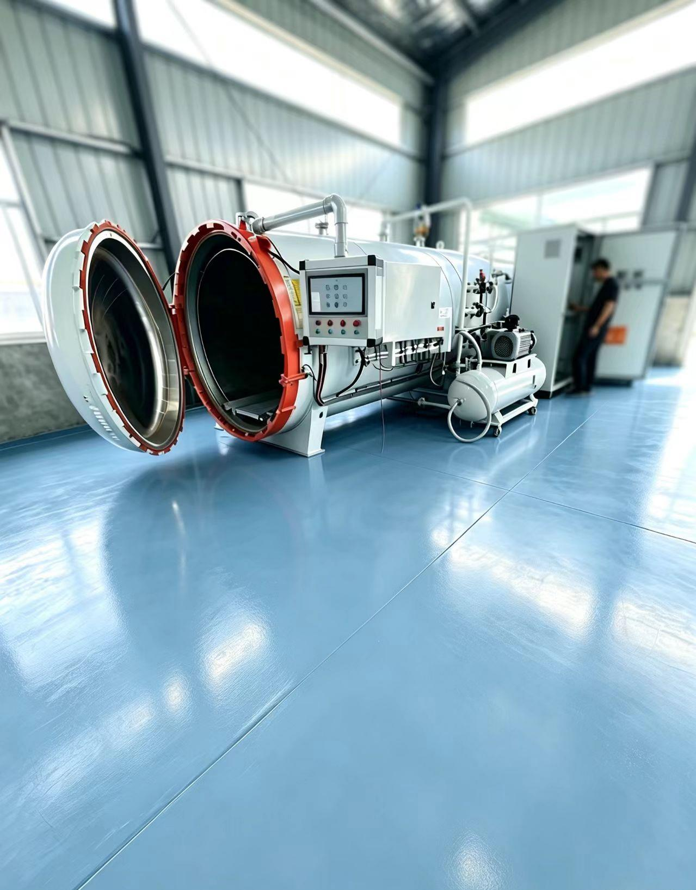

Factory Strength
One roof, one standard: prepreg lamination, autoclave curing and 5-axis precision machining in our Dezhou, Shandong facility.

-->Production Capability
- Prepreg cutting & ply nesting stations
- Autoclave & curing ovens — standard and OoA quick-cure processes
- 3-axis and 5-axis CNC machining centers (±0.05 mm)
- Tube rolling & filament winding lines
- Surface finishing: polishing, clear coating, logo engraving
- Inspection: calipers, micrometers, gauges & visual QC stations
Checked at Every Stage
Incoming Material
Prepreg lot & storage check
Layup Control
Ply count & orientation audit
Curing Records
Time–temperature–pressure logs
In-Process CNC
First-article dimension check
Final Inspection
Dimensions, surface & weight
Packing & Docs
Protective export packing
Design-to-Manufacture Support
Our engineering team works in CAD environments (FreeCAD, Siemens NX) and communicates directly with your designers — in plain technical English, with drawings.
CAD Native
STEP, IGES and DWG workflows with direct model-based quoting and machining programming.
Layup Design
Fiber orientation and ply sequences engineered to your stiffness, strength and weight targets.
Cost Optimization
DFM reviews that balance performance and budget — right material, right process, right price.
Audit Us With Your Next Project
The fastest way to evaluate a factory is to run a trial order. Send a drawing and test our response.